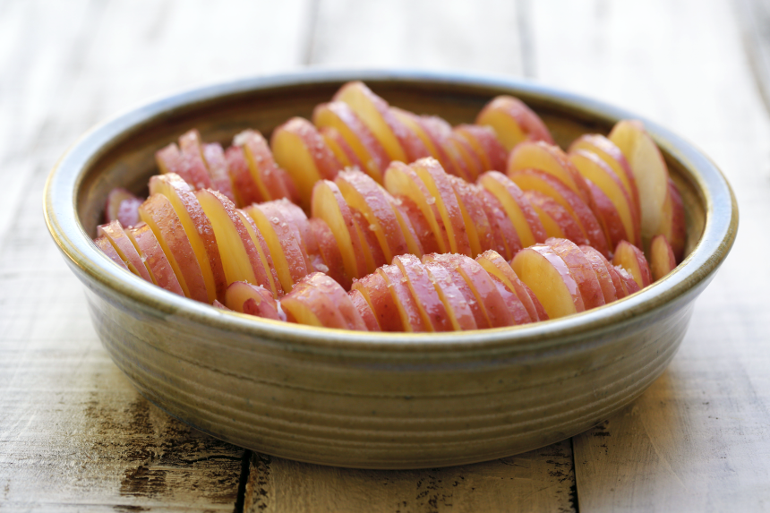

Potatoes with rosemary and sea salt
A great marriage is one where each person, without agenda, celebrates the unique and distinctive characteristics of the other, and lovingly helps them be the best possible version of themselves. When I see a couple who express this in their relationship I am always moved and inspired, because they are so much more together than they could possibly be individually. In my world I have a number of friends whose marriages have worked out this principle for many years and each day they bring joy to each other, and those in their sphere of influence.
In a very roundabout way, this is an introduction to the marriage of ingredients and this recipe. Tomatoes and basil, chocolate and coffee, peas and mint are ingredients that belong together, and, when paired in a recipe with love, care and a little finesse, bring out the very best in each other while still maintaining their individual and distinctive flavours. Potatoes and rosemary are another such pairing, and in this simple, simple recipe bring out the absolute best in each other. It’s a perfect accompaniment to grilled meat or fish and salad. You can easily increase the quantities in this recipe to feed a crowd – it really just depends on the size of your biggest baking dish and the size of your oven!
Ingredients: (serves 4 – 6)
- 8 medium sized red-skinned potatoes
- 1 tablespoon good olive oil
- sea salt and freshly ground black pepper
- 4 sprigs of fresh rosemary
Preheat oven to 180 C. Using a mandolin slice the potatoes very thinly. Place in a medium sized glass bowl and cover with cold water. Let sit for about 20 minutes then drain and dry well with a tea towel. Pick the leaves off the rosemary and place in the base of a 20 cm round or 18 cm square dish. This enables their earthy flavour to infuse the potatoes as they cook and keeps them from burning and becoming bitter. Stack the potato slices in the dish, quite tightly. They will shrink a little as they cook. Drizzle with the olive oil and season well with sea salt and black pepper. Bake for 45 – 55 minutes, until the potatoes are golden and crispy around the edges. Serve immediately.